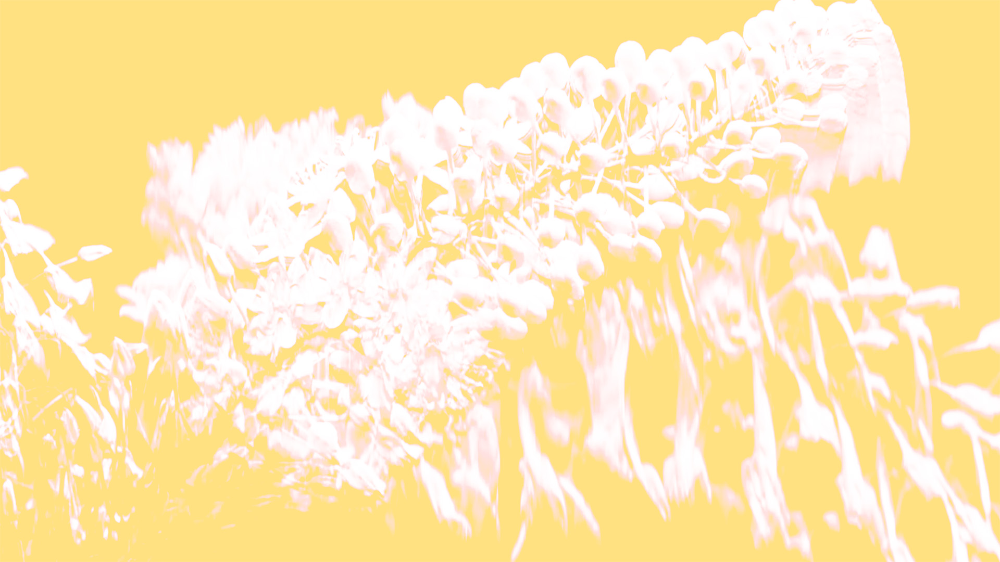

(
interlude
)
Brief Pauses of Everyday Motion
Sway of Trees
Unfinished Correspondence
Dance of Breath and Form
Precipitation as an Art
The Moment a Flower Becomes Itself
The Poem of Unmoving Hands
Draw a Pause
Spectrum Symphony
Metamorphic Flow
Whispers of the Night Sky
A Glitch in the Ordinary
Shells Keep Secrets